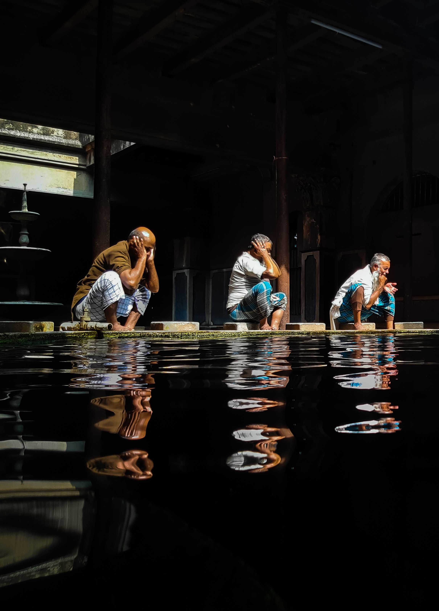
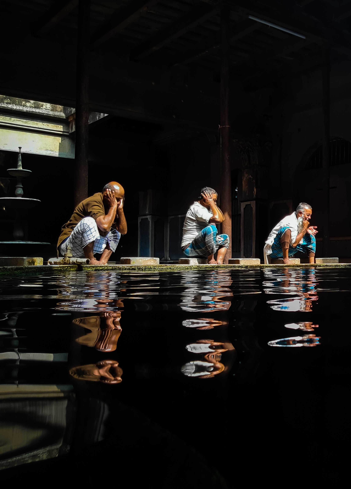

Kolkata, Bengali Kalikata, formerly Calcutta, city, capital of West Bengal state, and former capital (1772–1911) of British India. It is one of India’s largest cities and one of its major ports. The city is centred on the east bank of the Hugli (Hooghly) River, once the main channel of the Ganges (Ganga) River, about 96 miles (154 km) upstream from the head of the Bay of Bengal; there the port city developed as a point of transshipment from water to land and from river to sea. A city of commerce, transport, and manufacture, Kolkata is the dominant urban centre of eastern India. The city’s former name, Calcutta, is an Anglicized version of the Bengali name Kalikata. According to some, Kalikata is derived from the Bengali word Kalikshetra, meaning “Ground of (the goddess) Kali.” Some say the city’s name derives from the location of its original settlement on the bank of a canal (khal). A third opinion traces it to the Bengali words for lime (calcium oxide; kali) and burnt shell (kata), since the area was noted for the manufacture of shell lime. In 2001 the government of West Bengal officially changed the name of the city to Kolkata. Fashioned by the colonial British in the manner of a grand European capital—yet now set in one of the poorest and most overpopulated regions of India—Kolkata has grown into a city of sharp contrasts and contradictions. Kolkata has had to assimilate strong European influences and overcome the limitations of its colonial legacy in order to find its own unique identity. In the process it created an amalgam of East and West that found its expression in the life and works of the 19th-century Bengali elite and its most noteworthy figure, the poet and mystic Rabindranath Tagore.

 
